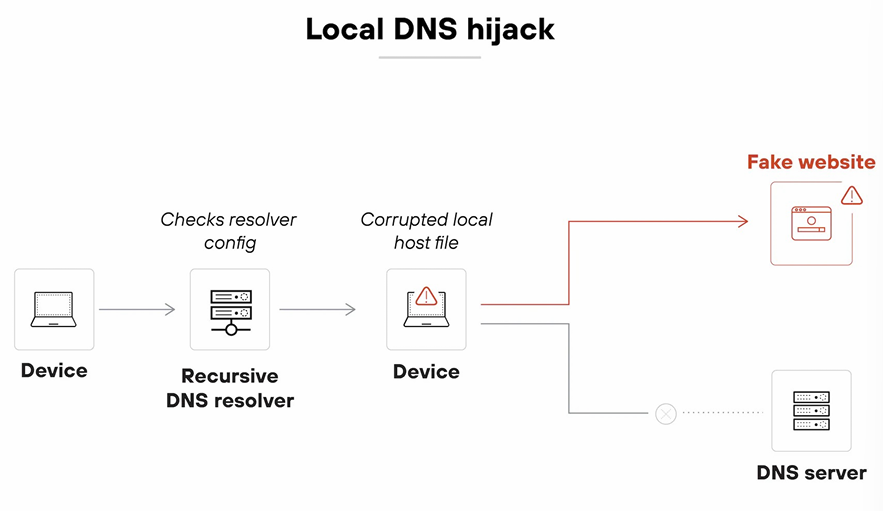
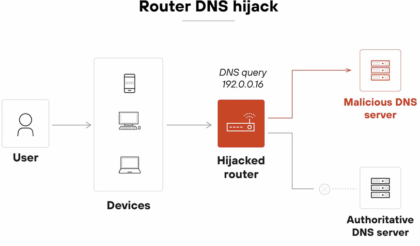
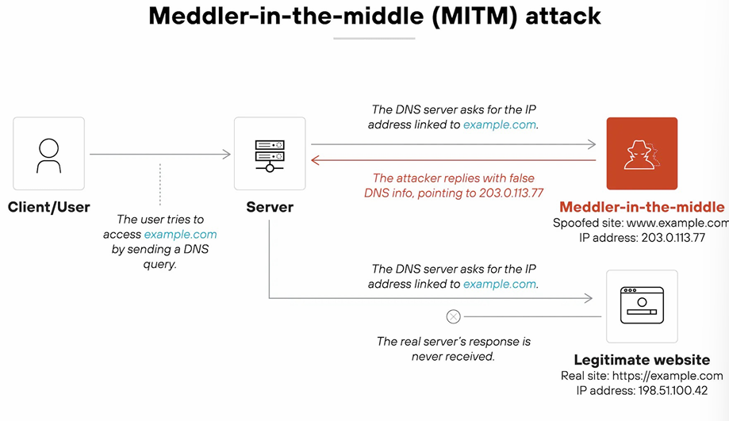
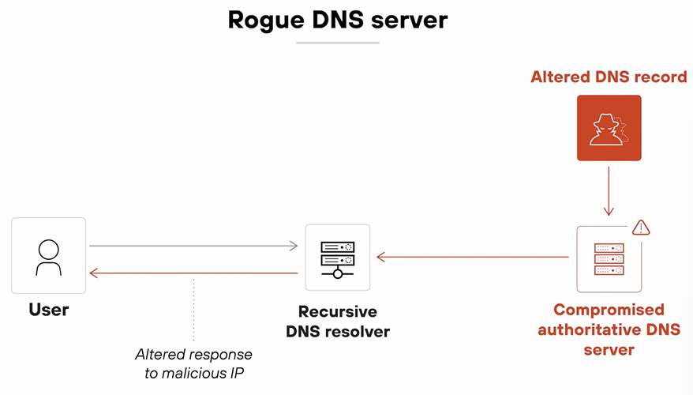

Intro To Cyber
Lecture 12 & 14
Date Taken: Fall 2025
Status: Completed
Reference: LSU Professor Joseph Khoury, ChatGPT
DNS (Domain Name System)
The Domain Name System (DNS) is a hierarchical and decentralized naming system used to translate human-readable domain names (like www.example.com) into IP addresses that computers use to identify each other on the network.
DNS Attack
DNS attacks are malicious activities that target the Domain Name System (DNS) infrastructure to disrupt, manipulate, or exploit the resolution of domain names into IP addresses. These attacks can lead to various security issues, including unauthorized access, data theft, and service disruption.
- The attacker identifies a target, this could be a public website, internal domain, or DNS provider account. The attacker looks for weak points in the DNS infrastructure or admin access.
- The attacker gains access. They might steal credentials, exploit vulnerabilities, or use social engineering to compromise DNS servers, registrar accounts, or local routers.
- The attacker modifies DNS settings. They change DNS records or inject forged responses to redirect traffic from the legitimate IP address to a malicious one.
- The user submits a DNS query. The user tries to visit a domain as usual; by typing the address in a brower or using an app that initiates a connection.
- The query resolves to the attacker's IP. Instead of reaching the real server, the DNS response points to a server controlled by the attacker.
- The user reaches a fake or malicious destination. That could be a phishing site, malware host, or an impersonation of the original service. Everything appears normal unless the user checks the certificate or inspects the site closely.
Types of DNS Hijacking Attacks
- Local DNS hijack - This attack involves compromising the local DNS resolver on a user's device, redirecting DNS queries to malicious servers. In more direct terms, it manipulates the DNS settings on the user's device to redirect traffic. (Ex) The attacker changes the DNS settings on the victim's device so when they try to visit a website, the DNS query is redirected to a malicious server. (Usually affects individual devices.)
- Router DNS hijack - Attackers gain access to a router and change its DNS settings to redirect traffic for all devices on the network. In more direct terms, it manipulates the router's DNS settings to redirect traffic. (Ex) Changing the DNS settings on a home or office router to point to a malicious DNS server. (Usually affects all devices on the network.)
- Meddler-in-the-Middle Attack - The attacker intercepts and alters DNS queries and responses between the user and the DNS server. In more direct terms, it intercepts and modifies DNS communications to redirect traffic. (Ex) Intercepting DNS requests on a same public Wi-Fi network and provides forged responses that maps the real domain name to a malicious IP address. (Usually affects users on the same network.)
- Rogue DNS server - A malicious DNS server is set up to provide false DNS responses, redirecting users to harmful sites. In more direct terms, it provides false DNS information to redirect traffic. (Ex) The domain name will be the same but the IP address is different; www.example.com - same domain name but different IP address, real IP 10.0.0.1, fake IP 10.0.0.2. (Usually affects anyone using that server. Global)




DNS Resolution
DNS resolution is the process of converting a human-readable domain name (like www.example.com) into its corresponding IP address (like 192.0.2.1). This process involves multiple steps and components working together to ensure that users can access websites and services using easy-to-remember domain names instead of numerical IP addresses.
UDP (User Datagram Protocol)-Based Amplification Attacks
UDP-based amplification attacks are a type of Distributed Denial of Service (DDoS) attack that exploits the stateless nature of the User Datagram Protocol (UDP) to overwhelm a target system with a flood of traffic. These attacks leverage the ability to send small requests that elicit much larger responses from vulnerable servers, amplifying the amount of data directed at the target.
Questions:
A server administrator at a bank has noticed a decrease in the number of vistors to the bank's website.
Additional research shows that users are being directed to a different IP address than the bank's web server.
Which of the following would MOST likely describe this attack?
- Deauthentication
- DDOS
- Buffer Overflow
- DNS Poisoning
The answer is DNS Poisoning. This is because the users are being redirected to a malicious IP address instead of the legitimate bank's web server, which is a classic symptom of DNS poisoning attacks where the DNS cache is manipulated to redirect traffic.
DNS Poisoning (or DNS Spoofing) involves corrupting the DNS cache to redirect traffic to malicious sites. As a result, users may unknowingly visit harmful websites.
Why not the others?
- Deauthentication: This attack targets wireless networks and disconnects users, not redirects them.
- DDOS: While it can disrupt service, it does not redirect users to a different IP address.
- Buffer Overflow: This is a type of exploit that targets software vulnerabilities, not DNS redirection.
A security administrator needs to block users from visiting websites hosting malicious software.
Which of the following would be the BEST way to control this access?
- Honeynet
- Data Masking
- DNS filtering
- Data Loss Prevention
The answer is DNS filtering. This method allows the administrator to block access to malicious websites by filtering DNS requests, preventing users from reaching harmful domains.
DNS filtering is a security measure that restricts access to certain websites based on their domain names. It helps prevent users from visiting malicious sites by blocking DNS requests to those domains.
Why not the others?
- Honeynet: A honeynet is a network set up to attract and analyze cyber attacks, not for blocking access.
- Data Masking: This technique is used to protect sensitive data, not for controlling website access.
- Data Loss Prevention: DLP focuses on preventing data breaches and leaks, not on filtering web access.
While working from home, users are attending a project meeting over a web conference.
When typing in the meeting link, the browser is unexpectedly directed to a different website than the web conference.
Users in the office do not have any issues accessing the conference site.
Which of the following would be the MOST likely reason for this issue?
- Local DNS Hijack
- Router DNS Hijack
- Meddler-in-the-Middle DNS Hijack
- Rogue DNS Server
- All of the Above
The answer is Router DNS Hijack. This is because the issue is specific to users working from home, indicating that the router they are using may have been compromised to redirect DNS queries to malicious sites.
Router DNS hijack occurs when an attacker gains access to a router and changes its DNS settings, redirecting traffic for all devices on the network to malicious sites. This explains why only home users are affected while office users are not.
Why not the others?
- Local DNS Hijack: Would affect only one device, not all at home.
- Meddler-in-the-Middle DNS Hijack: Would likely affect both home and office users if the attacker is intercepting traffic.
- Rogue DNS Server: Would affect anyone using that server, not just home users.
- All of the Above: Too broad to be the MOST likely reason.
Password Attacks
Password attacks are attempts by malicious actors to gain unauthorized access to systems, accounts, or data by cracking or guessing passwords. These attacks can take various forms, each exploiting different vulnerabilities in password security.
- Brute Force Attack - This method involves systematically trying all possible combinations of characters until the correct password is found. Attackers may use automated tools to speed up the process.
- Dictionary Attack - In this approach, attackers use a precompiled list of common passwords or words (a "dictionary") to guess the password. This method is faster than brute force since it focuses on likely options.
- Phishing - Phishing attacks involve tricking users into revealing their passwords through deceptive emails, websites, or messages that appear legitimate.
- Keylogging - Keyloggers are malicious software or hardware devices that record keystrokes made by a user, capturing passwords as they are typed.
- Credential Stuffing - This technique involves using lists of previously compromised usernames and passwords to gain access to other accounts, exploiting the tendency of users to reuse passwords across multiple sites.
Indicators of Compromise (IoC)
Indicators of Compromise (IoC) are pieces of evidence that suggest a security breach or malicious activity has occurred within a computer system or network. IoCs help cybersecurity professionals identify and respond to potential threats by providing clues about the nature and extent of an attack.
- Unusual Network Traffic - A sudden spike in outbound traffic or connections to unfamiliar IP addresses can indicate data exfiltration or communication with command-and-control servers.
- Unexpected System Changes - Unauthorized modifications to system files, configurations, or registry settings may suggest that malware has been installed or that an attacker has gained access.
- Presence of Malware Signatures - Detection of known malware signatures by antivirus or endpoint detection and response (EDR) tools is a clear indicator of compromise.
- Suspicious User Activity - Unusual login times, multiple failed login attempts, or access from unfamiliar locations can signal compromised user accounts.
- New or Unknown Processes - The appearance of unfamiliar processes running on a system may indicate the presence of malware or unauthorized software.
Other Indicators?
- Account Lockout - Multiple failed login attempts can lead to account lockouts, which may indicate a brute force attack or unauthorized access attempts.
- Concurrent Session Usage - Simultaneous logins from different locations or devices can suggest compromised credentials or unauthorized access.
- Resource Consumption Anomalies - Unexpected spikes in CPU, memory, or disk usage may indicate malicious activity or malware presence. Ex. Unusual spike of activity at 3am
- Missing/Altered Files or Logs - The absence or modification of critical system files or logs can be a sign of an attacker attempting to cover their tracks.